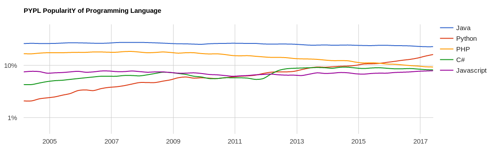

Qu'est ce que ICTV ?
- ICTV est un système de gestion de contenu pour l'affichage dynamique.
- ICTV vous permet de créer et modifier du contenu qui sera affiché sur un réseau d'écrans.
- L'interface d'ICTV est entièrement basée sur le web. Tout depuis la gestion du contenu jusqu'à sa reproduction sur les écrans est effectué dans un navigateur.
- ICTV est facilement extensible grâce à un système de plugins simple et puissant.
Pourquoi une version 2 ?
- Affichage limité à des images statiques
- Pas de vidéos ou d'images animées
- Diaporama inerte, aucune transition dynamique possible
- Interface trop austère
- Opportunité de remise à plat de la conception du logiciel
Plugins
Tout contenu provient d'un plugin.
- Un plugin peut être un programme automatisé.
- E.g. un programme qui crée du contenu à partir d'un flux RSS.
- Interaction plus large avec les utilisateurs possible à travers l'intégration d'une sous-application web propre au plugin dans ICTV.
- La configuration des plugins se fait via l'interface web d'ICTV.
Plugins
Il existe déjà des plugins utiles:
- editor est un éditeur web permettant de créer des diaporamas.
- embed permet d'intégrer des pages web dans le système.
- rss permet d'extraire et de transformer des flux RSS en diaporamas.
- cal crée des annonces sur base d'événements de calendrier.
- img-grabber extrait des images de pages web.
Channels
- Elles permettent d'organiser le contenu.
- Chaque channel contient un type d'information thématique.
- Chaque channel est une instance, une paramétrisation, d'un plugin.
- Les channels peuvent être publiques ou restreintes à certains utilisateurs.
Screens
- Une sortie affichant du contenu
- Peut être physique, i.e. un écran, ou virtuel, i.e. une page web.
- Les écrans diffusent le contenu des channels auxquelles ils sont abonnés.
- Les abonnements d'un écran vont déterminer le contenu qui y sera affiché.
Contenu
- Un diaporama de slides utilisant reveal.js
- Utilise les nombreuses possibilités offertes par HTML5 et CSS3.
- Compositions complexes, GIFs, vidéos et images de fond sont possibles.
Technologies utilisées
-
Coté client
- reveal.js pour les diaporamas.
- AdminLTE pour l'interface utilisateur, basé sur JQuery et Bootstrap.
-
Coté serveur
Intermède
Votre mission
Imaginer un nouveau plugin utile pour ICTV, pas nécessairement lié à l'INGI.
Plus il peut être utilisé dans de nombreuses situations, plus son intérêt est grand.
Un peu d'inspiration
Actuellement, il n'y a pas d'interactions possibles pour le public regardant les écrans.
Un plugin de sondage permettrait d'interroger les audiences et d'interagir avec ICTV.
Python
- Démarré en 1990 par Guido Van Rossum
- Aujourd'hui à la version 3.6 (décembre 2016)
- Langage interpreté, multi-paradigme et multiplateformes
- Selon PYPL
Python grew the most in the last 5 years (8.7%)

Python
- Syntaxe élégante
- Conception axée vers la simplicité d'utilisation, sans compromettre la maintenabilité
- Interpreteur intégré pour tester facilement des bouts de code
- Gestion automatique de la mémoire
- Intégration de modules en C/C++ possible
Paradigmes & typage
- Paradigme procédurale
- Paradigme orienté objet
- Paradigme fonctionnel
- Typage dynamique, comme JavaScript
String string = "Hello, world!";string = "Hello, world!"
- Typage fort, comme Java mais avec peu de conversions implicites
String result = "Hello, world!" + 2;result = "Hello, world!" + str(2)
Types
Toute valeur est un objet
- Pour les nombres:
int et float
- Pour les chaines de caractères:
str
'' et "" pour les délimiter.
- Pour les booléens:
bool
- Utilisé principalement pour des conversions explicites
str(2) équivaut à "2" équivaut à '2'
Variables
- Déclarées et initialisées en une instruction.
- Au moins une lettre, suivi de chiffres, lettres ou le caractère
_
- La convention de nomage est le snake case, comme
nom_de_variable
- Pas d'opérateur pour déclarer une variable, une première assignation dans le contexte courant compte comme déclaration.
- Les variables commençant par
_ indiquent qu'elles sont privées.
- L'opérateur
del permet de supprimer une variable du contexte.
- Pas de type explicitement associé à une variable
Strings
word = "Python"- Répété avec
*, concatené avec +
- Peut être indexé:
+---+---+---+---+---+---+
| P | y | t | h | o | n |
+---+---+---+---+---+---+
0 1 2 3 4 5 6
-6 -5 -4 -3 -2 -1
- Peut être découpé (sliced):
>>> word[0:2] # characters from position 0 (included) to 2 (excluded)
'Py'
>>> word[2:5] # characters from position 2 (included) to 5 (excluded)
'tho'
- Les strings sont immutables.
Lists
squares = [1, 4, 9, 16, 25]- Elle peut être indexée et découpée.
- Les listes sont mutables.
- Elles peuvent contenir des objet de type différent.
Sets & dictionaires
odd_numbers = {1, 3, 5, 7, 9}
capitals = {'Belgium': 'Brussels', 'France': 'Paris', 'Canada': 'Ottawa'}
2 in odd_numbers équivaut à Falsecapitals['Canada'] équivaut à 'Ottawa''France' in capitals équivaut à True